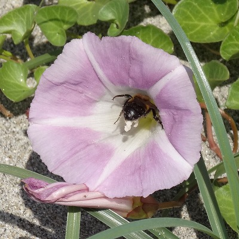
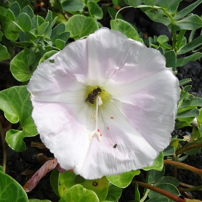
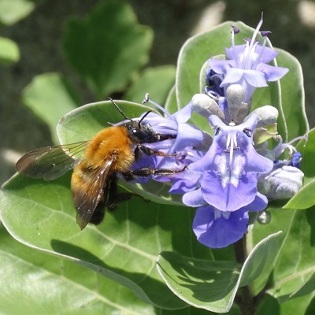
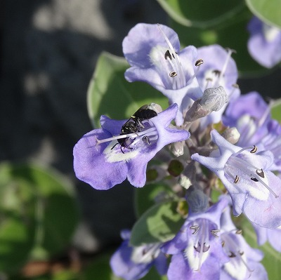

Research
近年、生物多様性の減少や外来種の侵入などにより、群集を構成する種間の相互作用に変化が生じています。
里山や海洋島の生態系（送粉者ー植物群集、水田生物群集）を対象に、生物多様性の変化が相互作用に与える影響について研究を行っています。
また、多種多個体から構成される生物群集の調査は多大な労力を要します。
そこで、ディープラーニングを用いた自動計数など調査の省力化にも取り組んでいます。
長口吻送粉者の減少が送粉ネットワークに与える影響評価

本州のハマヒルガオ

伊豆諸島のハマヒルガオ

本州のハマゴウ

伊豆諸島のハマゴウ
近年、世界的にマルハナバチ類やチョウ類などの長い口吻をもつ送粉者が人間活動などにより減少していることが報告されています。 一般に長口吻送粉者は長い花筒をもつ植物と相互作用しているといわれており、これらの植物への影響が危惧されています。 本研究では、長口吻送粉者が少ない伊豆諸島（海洋島）と本州の海浜植物群集を比較し、長口吻送粉者の不在が送粉ネットワークをどのように変化させ、植物の繁殖成功に影響を与えるのか調べました。
その結果、長口吻送粉者の不在は、短口吻送粉者の長花筒植物への訪花を促進し、これらの植物への訪花個体数を補償しうることがわかりました。 しかし、長口吻送粉者の不在により、長花筒植物の繁殖成功は減少しており、短口吻送粉者による補償が十分でないことを明らかにしました。
関連論文
*
Hiraiwa MK
and Ushimaru A (2017) Low functional diversity promotes niche changes in natural island pollinator communities.
Proceedings of the Royal Society B
284:20162218.
その他の研究については順次追加していきます。
Top